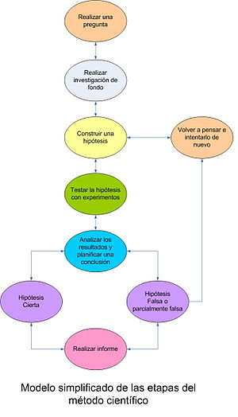

Planificació
Com resoldrem la pregunta guia? Expliqueu els passos que teniu pensats per resoldre el problema. Sigueu detallats/des. Que necessitarieu per resoldre'l.
A1: Escriviu en 10 minuts l'estrategia que seguirieu per resoldre la pregunta. Definiu una llista de com a mínim 10 passos.
Avaluació
Quins aspectes creieu que la vostra presentació al final del projecte serà bona? Llista almenys 5 aspectes que ens demostrin que la vostra presentació serà una bona investigació, tant desde el punt e vista formal (la presentació està ben feta), com des del punt de vista del contingut (el que descriuen té sentit, ...).
A2: Llista de criteris per saber si la vostra presentació és correcta.
Mètode Científic
Com ja sabeu, el mètode científic és una eina molt sólida per crear nou coneixement. S'utilitza sobretot en la ciència per desmentir falacies i prejudicis cognictius. Serà el mètode que utilitzarem per demostrar si és un mite o un fet.

A3: Escriviu la vostra hipotesi sobre la pregunta guia. És un fet o és un mite. I sobretot, perquè?